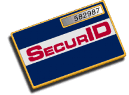

ACE/Agent for Netscape Servers implements the WebID© feature set, a server-side plugin that SecurID-protects selected resources on a Netscape EnterpriseTM or FastTrackTM Web server while maintaining a high level of performance.
When you enable ACE/Agent protection, users who attempt to view the protected resource are prompted for a SecurID PASSCODETM, which is passed across a TCP/IP network to the ACE/Server for validation. If the user enters a valid PASSCODE, the user is given access to the protected data; if the user does not enter a valid PASSCODE, the user is denied access.
Only those users who are registered as tokenholders in the ACE/Server database are able to access the SecurID-protected Web resources. As a result, you can use your Web site as both a public information source available to anonymous users and a highly secure Intranet for posting confidential information to trusted users.
You must have SecurID
tokens and at least a trial version of the ACE/Server software running
on your network in order to utilize ACE/Agent for
Netscape Servers v1.1. |
For more information about obtaining ACE/Server software or SecurID tokens, visit the Security Dynamics Web site.
In addition, Security Dynamics strongly recommends that the Web server have a Secure Sockets Layer (SSL) certificate installed to ensure that transmission of critical information is not compromised. For more information about how to obtain an SSL certificate, visit the VeriSign Web site.